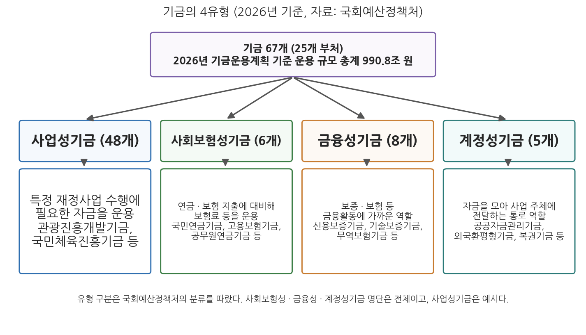
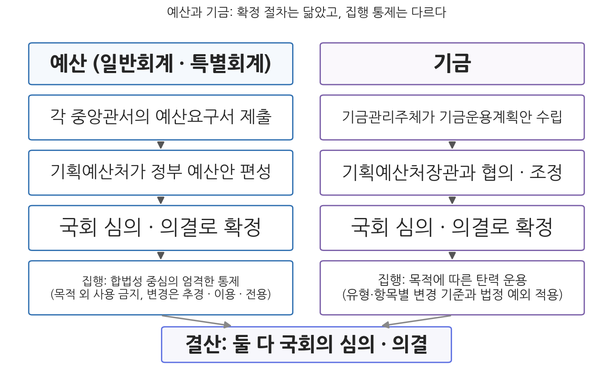

3주차 2차시. 기금과 세입·세출예산
최종 수정: 2026-08-13 · 이 교재는 학기 중에도 계속 업데이트됩니다
기금은 세입세출예산에 의하지 아니하고 운용할 수 있다. (국가재정법 제5조 제2항)
이 장에서 배우는 것
990조 7,588억 원. 2026년도 기금운용계획 기준으로 67개 기금이 한 해 동안 운용하는 자금의 총계다(국회예산정책처, 2025). 같은 해 예산 기준 총지출이 727.9조 원이니, 세입세출예산이라는 틀 바깥에서 예산 전체에 맞먹는 규모의 돈이 움직이고 있는 셈이다. 이 돈은 멀리 있지 않다. 월급명세서에서 빠져나가는 국민연금 보험료와 고용보험료는 세금이 아니라 각각 국민연금기금과 고용보험기금의 수입이고, 복권 판매 수익의 일부는 복권기금으로 들어간다. 조세가 아닌 돈이, 예산이 아닌 그릇에 담겨, 국가의 이름으로 운용되는 것이다.
1차시에서 우리는 정부재정의 3원 구조 가운데 일반회계와 특별회계를 살펴보았다. 이번 차시는 남은 한 조각인 기금을 다룬다. 기금은 특별회계보다 한 걸음 더 나아간 예외다. 특별회계는 그래도 세입세출예산 안에 편성되지만, 기금은 예산이라는 틀 자체의 바깥에서 운용된다. 그렇다면 즉시 다음 질문이 떠올라야 한다. 국민의 부담으로 조성된 돈이 예산 밖에서 움직인다면, 국회의 통제는 어떻게 이루어지는가. 이 질문에 대한 한국 재정법의 대답, 곧 신축성과 통제 사이의 타협 장치가 이번 차시의 핵심이다. 마지막 절에서는 시야를 예산으로 되돌려, 세입예산과 세출예산이라는 두 기둥의 법적 성격이 어떻게 다른지를 확인한다. 구체적으로 다음을 배운다.
- 기금의 개념(국가재정법 제5조)과 4유형, 2026년 기준 현황(67개, 운용 규모 총계 990.8조 원)
- 기금운용계획의 수립·확정 절차와 계획 변경에 대한 국회 통제(20-30% 자율 변경의 논리)
- 예산과 기금의 유사점과 차이점, 그리고 재정 전체에서 기금이 차지하는 자리
- 세입예산의 임의적 성격과 세출예산의 구속력, 구속력의 세 원칙과 신축성 장치
이 장은 하나의 질문을 따라 전개된다. "예산 밖에서 움직이는 돈에 대해, 운용의 신축성과 국회의 통제는 어떻게 타협하는가?"
2.1 기금의 개념과 4유형, 2026년 현황을 확인한다 → 2.2 기금운용계획의 수립·확정·변경 절차에 새겨진 통제 장치를 뜯어본다 → 2.3 예산과 기금을 체계적으로 비교한다 → 2.4 세입예산과 세출예산의 법적 성격 차이를 확인하고 4주차를 예고한다.
2.1 기금의 의의와 종류
기금이 무엇인지는 국가재정법 제5조가 압축해서 정의하고 있다. 원문을 읽어 보자.
"① 기금은 국가가 특정한 목적을 위하여 특정한 자금을 신축적으로 운용할 필요가 있을 때에 한정하여 법률로써 설치하되, 정부의 출연금 또는 법률에 따른 민간부담금을 재원으로 하는 기금은 별표 2에 규정된 법률에 의하지 아니하고는 이를 설치할 수 없다.
② 제1항의 규정에 따른 기금은 세입세출예산에 의하지 아니하고 운용할 수 있다."
무슨 뜻인가. 제1항에는 기금의 세 가지 요건이 담겨 있다. 특정한 목적, 특정한 자금, 그리고 신축적 운용의 필요다. 앞의 둘은 1차시에서 본 특별회계의 설치 사유와 닮았지만, 셋째 요건인 신축성이 기금을 특별회계와 갈라놓는다. 그리고 특별회계의 별표 1 열거주의와 똑같은 구조로, 정부 출연금이나 법률에 따른 민간부담금을 재원으로 하는 기금은 국가재정법 [별표 2]에 등재된 법률에 의해서만 설치할 수 있다. 신설하려면 기획예산처장관에게 계획서를 제출해 타당성 심사를 받아야 하는 것도 특별회계와 같다(제14조). 제2항이 이 조문의 핵심이다. 기금은 세입세출예산에 의하지 아니하고 운용할 수 있다. 1차시의 언어로 말하면, 특별회계가 예산 단일성·통일성 원칙의 예외라면 기금은 세입세출예산이라는 형식 자체로부터의 예외다.
기금(fund)은 국가가 특정한 목적을 위하여 특정한 자금을 신축적으로 운용할 필요가 있을 때 법률로 설치하는 자금으로, 세입세출예산에 의하지 아니하고 운용할 수 있다(국가재정법 제5조). 재원은 조세가 아니라 정부출연금, 법률에 따른 민간부담금(보험료·부담금 등), 차입금, 자금 운용수익 등이다. 개별 기금을 관리·운용하는 부처나 위탁받은 기관을 기금관리주체라 한다. 기금은 회계연도 안에 다 쓰고 끝나는 것이 아니라 조성된 자금을 계속 적립해 나갈 수 있다는 점에서도 예산과 다르다.
기금은 성질에 따라 네 유형으로 나뉜다. 그림 3-3이 2026년 기준의 분류다.

그림 3-3을 읽는 법은 이렇다. 위의 상자가 2026년 기준 기금 전체(25개 부처, 67개)이고, 아래의 네 상자가 국회예산정책처의 분류에 따른 유형이며, 각 상자 아래에 그 유형의 기능과 대표 기금이 있다. 이 그림에서 알 수 있는 것은 기금이라는 하나의 이름 아래 성격이 매우 다른 네 집단이 있다는 점이다. 사업성기금(48개)은 관광진흥개발기금이나 국민체육진흥기금처럼 특정 재정사업의 재원을 대는, 개수로는 가장 큰 집단이다. 사회보험성기금(6개)은 국민연금기금·공무원연금기금·군인연금기금·사립학교교직원연금기금·고용보험기금·산업재해보상보험및예방기금으로, 보험료를 걷어 장래의 연금·보험 지출에 대비하는 기금이며 규모 면에서 압도적이다. 금융성기금(8개)은 신용보증기금·기술보증기금·무역보험기금처럼 보증과 보험을 제공하는, 재정활동보다 금융활동에 가까운 기금이다. 계정성기금(5개)은 공공자금관리기금·외국환평형기금·복권기금처럼 자금을 모아 실제 사업 주체에게 전달하는 통로 역할의 기금이다(국회예산정책처, 2025).
2026년의 기금 지형에는 1주차에서 본 정부조직 개편의 흔적도 새겨졌다. 종전 기획재정부가 소관하던 7개 기금은 재정경제부(4개)와 기획예산처(2개)로 나뉘어 이관되었고, 기후대응기금은 기후에너지환경부 소관으로 옮겨졌다(국회예산정책처, 2025). 기금 전체의 운용과 제도 관리, 곧 기금운용계획안 작성지침의 통보와 뒤에서 볼 운용 평가는 기획예산처의 몫이다.
"기금 운용 규모 990.8조 원"은 총계 기준의 숫자다. 기금 사이의 전출입 같은 내부거래, 빌린 돈을 갚는 보전지출, 그리고 여유자금을 금융상품으로 굴리는 운용까지 전부 더한 값이므로, 실제로 국민을 위한 사업에 지출되는 돈보다 훨씬 크다. 내부거래 등을 걷어낸 총지출 기준으로 2026년 기금의 지출은 246.5조 원(총지출의 33.9%)이며, 이때 성격상 재정활동으로 보기 어려운 외국환평형기금과 8개 금융성기금은 아예 산정에서 제외된다(국회예산정책처, 2025). 990.8조 원과 246.5조 원 사이의 간극이 바로 4주차에서 배울 총계·순계와 통합재정 논의의 출발점이다.
2.2 기금운용계획과 통제
기금이 세입세출예산 밖에 있다고 해서 국회 통제 밖에 있는 것은 아니다. 기금은 예산과 별도의 문서인 기금운용계획으로 관리되며, 이 계획은 예산안과 똑같이 국회의 심의·의결을 거쳐야 한다. 절차를 순서대로 보면 이렇다. 기획예산처장관은 매년 기금운용계획안 작성지침을 기금관리주체에게 통보한다(국가재정법 제66조). 기금관리주체는 지침에 따라 다음 연도의 수입과 지출을 담은 기금운용계획안을 수립하고, 기획예산처장관과의 협의·조정을 거쳐 국무회의 심의와 대통령 승인을 받는다. 정부는 이 계획안을 회계연도 개시 120일 전까지 국회에 제출하고(제68조 제1항), 국회의 심의·의결로 확정된다. 기금의 결산 역시 국가결산보고서에 통합되어 국회의 심의·의결을 받는데, 국가결산보고서의 작성·제출은 재정경제부장관 소관이다(제58-61조). 요컨대 들어올 때(계획)와 나갈 때(결산) 모두 국회의 문을 통과해야 한다는 점에서 기금은 예산과 같다.
그렇다면 기금의 신축성은 어디에 있는가. 확정된 계획을 집행 중에 바꾸는 단계에 있다. 예산은 국회가 확정한 금액과 용도에 엄격히 묶이며, 이를 바꾸려면 추가경정예산(추경)을 편성하거나 이용·전용 같은 예외 절차를 밟아야 한다. 반면 기금은 확정된 기금운용계획의 주요항목(장·관·항) 지출금액이라도 일정 범위 안에서는 국회에 가지 않고 정부 안에서 변경할 수 있다. 그 범위를 정한 조문을 직접 읽어 보자.
"③ 제2항에도 불구하고 주요항목 지출금액이 다음 각 호의 어느 하나에 해당하는 경우에는 기금운용계획변경안을 국회에 제출하지 아니하고 대통령령으로 정하는 바에 따라 변경할 수 있다.
1. 별표 3에 규정된 금융성 기금 외의 기금은 주요항목 지출금액의 변경범위가 10분의 2 이하
2. 별표 3에 규정된 금융성 기금은 주요항목 지출금액의 변경범위가 10분의 3 이하. 다만, 기금의 관리 및 운용에 소요되는 경상비에 해당하는 주요항목 지출금액에 대하여는 10분의 2 이하로 한다."
무슨 뜻인가. 원칙은 제70조 제2항에 있다. 기금관리주체가 주요항목 지출금액을 변경하려면 기획예산처장관과 협의·조정하여 마련한 변경안을 국무회의 심의와 대통령 승인을 거쳐 국회에 제출해야 한다. 예산의 추경에 해당하는 절차다. 제3항은 그 예외로, 변경 폭이 주요항목 지출금액의 20%(금융성기금은 30%) 이하라면 국회 제출 없이 변경할 수 있게 한다. 20%와 30%라는 문턱은 신축성과 통제의 타협선이다. 예측하기 어려운 소요나 긴급한 소요에는 기동성 있게 대응하되, 계획을 뿌리째 바꾸는 큰 변경은 반드시 국회로 돌아가라는 것이다. 금융성기금에 더 넓은 자율을 주는 것은 보증·보험 수요가 경기에 따라 급변하기 때문이며, 다만 기금 운영 자체에 쓰는 경상비는 금융성기금이라도 20%로 묶어 방만한 운영을 막는다.
연금 사업을 생각해 보자. 연금의 한 해 지출은 수급자 수, 임금과 물가, 경기에 따라 움직이므로 1년 전에 확정한 금액이 그대로 들어맞기 어렵다. 이런 사업을 세출예산에 담으면 예측이 빗나갈 때마다 국회에서 추경을 편성해야 하는데, 추경은 편성 요건이 법으로 제한되어 있고(제89조) 정치적 비용도 크다. 사실상 불가능한 운영 방식이다. 보증 사업도 마찬가지다. 경기가 급락해 중소기업의 보증 수요가 몰릴 때 "예산에 없다"며 보증을 멈출 수는 없다. 요컨대 지출 소요를 사전에 확정하기 어렵고 수입과 지출이 실시간으로 연동되는 사업에는, 연 1회 확정하는 세입세출예산이라는 형식 자체가 맞지 않는다. 기금은 이런 사업을 위해 계획의 큰 틀만 국회가 정하고 집행의 세부는 움직일 수 있게 한 그릇이다. 대가는 1차시에서 본 것과 같다. 재정의 조각이 하나 더 늘어나 전체를 보기 어려워지고, 국회 통제의 밀도는 예산보다 낮아진다.
늘어난 자율에는 사후 통제가 따라붙는다. 국가재정법은 기획예산처장관이 회계연도마다 전체 기금 중 3분의 1 이상의 운용실태를 조사·평가하고, 3년마다 전체 기금의 존치 여부를 평가하도록 규정한다(제82조). 특별회계와 마찬가지로 기금에도 통폐합의 출구(제15조)가 열려 있으며, 실제로 작동한 최근 사례가 있다.
외교부 소관의 국제질병퇴치기금은 개발도상국의 질병 예방·퇴치 지원에 필요한 자금을 조성하기 위한 사업성기금으로, 국내 공항으로 출국하는 사람에게 부과·징수하는 출국납부금을 주요 재원으로 삼아 왔다. 그러나 공항을 통해 출국하는 사람과 개발도상국의 질병 예방 사이에 관련성이 미흡하다는 지적이 이어졌고, 외교부 소관 출국납부금이 폐지되면서 2024년 12월 10일 국제질병퇴치기금법 폐지법률안이 국회를 통과했다. 기금은 2025년 1월 1일부로 폐지되었다. (출처: 국회예산정책처, 『2026 대한민국 재정』, 2025)
이 사례가 보여 주는 것은 기금 존립의 논리 구조다. 기금은 "이 수입은 이 목적을 위한 것"이라는 특정 수입과 특정 지출의 연계를 존재 이유로 삼는데, 그 연계의 설득력이 무너지면(비행기를 타는 것과 개발도상국 질병 퇴치가 무슨 관계인가) 존치의 근거도 함께 무너진다. 거꾸로 읽으면, 연계의 논리가 살아 있는 한 기금은 좀처럼 없어지지 않는다. 67개라는 개수가 유지되는 이유이자, 3년 주기 존치평가에도 불구하고 통폐합이 더디게 진행되는 이유다.
2.3 예산과 기금의 비교
이제 1차시부터 쌓아 온 조각들을 하나의 비교표로 정리할 수 있다. 표 3-1은 일반회계·특별회계·기금을 운영 방식의 차원에서 비교한 것이다.
표 3-1. 예산과 기금의 비교
| 구분 | 일반회계 | 특별회계 | 기금 |
|---|---|---|---|
| 설치 사유 | 국가 고유의 일반적 재정활동 | 특정 사업 운영, 특정 자금 보유·운용, 특정 세입의 특정 세출 충당 | 특정 목적을 위한 특정 자금의 신축적 운용 |
| 재원(운용 형태) | 공권력에 의한 조세수입, 무상급부 원칙 | 일반회계와 기금의 운용 형태 혼재 | 출연금·부담금 등을 재원으로 특정 목적사업 수행 |
| 수입과 지출의 연계 | 연계 배제(통일성 원칙) | 특정 수입과 지출의 연계 | 특정 수입과 지출의 연계 |
| 확정 절차 | 부처 요구서 제출, 기획예산처의 정부 예산안 편성, 국회 심의·의결 | 일반회계와 동일 | 기금관리주체의 계획안 수립, 기획예산처장관과 협의·조정, 국회 심의·의결 |
| 집행 통제 | 합법성 중심의 엄격한 통제, 목적 외 사용 금지 | 일반회계와 동일(기업특별회계는 일부 특례) | 합목적성 차원에서 상대적으로 자율성·탄력성 보장 |
| 계획 변경 | 추경 편성, 이용·전용·이체 | 일반회계와 동일 | 주요항목 지출금액의 20%(금융성기금 30%) 초과 변경 시 국회 의결 필요 |
| 결산 | 국회 심의·의결 | 국회 심의·의결 | 국회 심의·의결 |
자료: 기획예산처 자료를 정리한 국회예산정책처(2025)를 재구성.
표의 요지는 그림 3-4로도 확인할 수 있다.

그림 3-4를 읽는 법은 이렇다. 왼쪽 열이 예산, 오른쪽 열이 기금의 한살이이며, 위에서 아래로 확정과 집행의 단계가 흐르고, 맨 아래에서 결산으로 합류한다. 이 그림에서 알 수 있는 것은 두 가지다. 첫째, 두 열의 위쪽 세 칸은 사실상 대칭이다. 계획을 세우고, 중앙예산기관(기획예산처)의 조정을 거치고, 국회의 심의·의결로 확정된다는 뼈대는 같다. 국민 부담으로 조성되는 돈이라는 점에서 민주적 통제의 관문을 생략할 수 없기 때문이다. 둘째, 차이는 아래쪽 집행 칸에서 벌어진다. 예산의 집행이 합법성의 언어(정해진 목적, 정해진 금액)로 통제된다면, 기금의 집행은 합목적성의 언어(목적 달성에 필요한가)로 관리되며 20-30%의 자율 변경 폭을 가진다. 요컨대 예산과 기금의 차이는 "국회를 거치느냐 마느냐"가 아니라 "국회가 어느 수준까지 손에 쥐고 있느냐"의 차이다.
기금과 예산의 차이를 정리하면 세 가지다. 첫째, 시간의 차이다. 세출예산은 원칙적으로 그 회계연도 안에 집행을 마쳐야 하지만, 기금은 조성된 자금을 여러 해에 걸쳐 계속 적립하고 굴릴 수 있다. 국민연금기금이 미래 세대의 연금 지급을 위해 거대한 적립금을 쌓아 가는 것이 대표적이다. 둘째, 연계의 차이다. 일반회계가 수입과 지출의 연계를 끊는 것을 원칙으로 삼는 반면, 기금은 특정 수입(보험료·부담금)과 특정 지출(급여·보증)의 연계 그 자체다. 셋째, 신축성의 차이다. 확정된 계획의 변경 문턱이 다르다는 점은 앞 절에서 본 대로다. 이 세 가지 차이에도 불구하고 국회의 확정과 결산 심사라는 관문이 같다는 점까지가 비교의 완성이다.
2.4 세입예산과 세출예산의 구조
마지막으로 시야를 예산 안으로 되돌려, 세입세출예산이라는 말의 두 기둥을 뜯어보자. 세입예산은 정부가 재원을 어떻게 동원할 것인가의 계획이고, 세출예산은 그 재원을 어떤 용도에 지출할 것인가의 계획이다. 동전의 양면처럼 세입예산과 세출예산의 총규모는 같다. 그러나 법적 효력은 전혀 다르다. 결론부터 말하면 세입예산은 구속력 없는 추정치이고, 세출예산은 구속력 있는 지출 한도다.
세입예산의 수치는 경제 여건을 고려한 수입의 전망치에 불과하다. 정부가 세금을 걷는 권한은 세입예산이 아니라 세법에서 나온다. 헌법 제59조가 "조세의 종목과 세율은 법률로 정한다"고 선언하고 있으므로(조세법률주의), 소득세법·법인세법 같은 세법이 있는 한 정부는 세입예산과 무관하게 세금을 걷고, 세법이 없으면 세입예산에 적어 놓아도 걷을 수 없다. 그래서 실제 세입이 세입예산과 달라져도 법적 문제는 생기지 않는다. 전망보다 덜 걷혔다고 더 걷어내지 않고, 더 걷혔다고 돌려주지도 않으며, 그 차이는 오차로 받아들여진다. 물론 법적 구속력이 없다는 것이 정치적·실무적으로 무의미하다는 뜻은 아니다. 세입 전망은 지출 계획의 토대이므로, 전망이 크게 빗나가면 재정운용 전체가 흔들린다. 실제로 최근 수년간 국세수입 추계의 오차가 반복되면서 세수 추계의 정확성이 재정운용의 쟁점으로 떠올라 있다. 2026년 세입예산의 뼈대가 되는 국세수입은 예산 기준 390.2조 원으로, 세제와 세입 전망의 소관은 재정경제부(세제실)다(국회예산정책처, 2025).
세출예산은 정반대다. 국회의 심의를 거쳐 확정된 세출예산의 수치는 행정부를 구속하는 지출 권한의 한도액이며, 구속력은 세 방향으로 작동한다. 첫째, 목적의 구속이다. 세출예산이 정한 목적 외에 경비를 사용할 수 없다(국가재정법 제45조). 국회가 도로 건설에 쓰라고 준 돈을 청사 신축에 쓸 수 없다는 목적 외 사용 금지의 원칙이다. 둘째, 금액의 구속이다. 세출예산에 계상된 금액을 초과하여 지출할 수 없다. 초과 지출은 금지되지만 과소 지출은 허용된다는 점이 세입예산의 오차와 대비된다. 셋째, 시간의 구속이다. 각 회계연도의 경비는 그 연도의 세입으로 충당해야 하며(제3조), 한 해의 세출예산은 다음 연도로 가져가 쓸 수 없다는 회계연도 독립의 원칙이 작동한다. 2주차에서 배운 한정성의 원칙이 목적·금액·시간의 세 차원에서 구체화된 모습이라고 정리할 수 있다.
다만 구속이 전부라면 행정은 움직일 수 없다. 예측하지 못한 사정 변경에 대응할 수 있도록, 국가재정법은 구속력의 틀 안에 신축성의 밸브를 여럿 마련해 두었다. 목적의 구속에는 이용·전용·이체가, 시간의 구속에는 이월과 계속비가, 예측 불가능성에는 예비비가 대응한다. 이 장치들의 구체적 내용은 10주차 2차시(예산집행)에서 다룬다. 여기서는 예산의 구속과 신축의 균형이라는 문제의식이, 앞서 본 기금의 20-30% 자율 변경과 정확히 같은 뿌리에서 나온다는 점만 기억해 두자.
이것으로 정부재정의 기본구조를 이루는 세 그릇(일반회계·특별회계·기금)과 예산의 두 기둥(세입·세출예산)을 모두 살펴보았다. 남은 질문은 1차시 끝에서 던진 그것이다. 89개의 주머니와 그 사이의 거래를 모두 합치면 나라 살림의 진짜 크기와 수지는 얼마인가. 4주차에서 예산총계·순계의 셈법과 통합재정의 틀로 이 질문에 답한다.
요약
기금은 국가가 특정한 목적을 위하여 특정한 자금을 신축적으로 운용할 필요가 있을 때 법률로 설치하며, 세입세출예산에 의하지 아니하고 운용할 수 있다(국가재정법 제5조). 출연금·부담금을 재원으로 하는 기금은 별표 2에 규정된 법률에 의해서만 설치할 수 있고, 신설 시 기획예산처장관의 타당성 심사를 받는다. 2026년 기준 25개 부처가 67개 기금을 운용하며 운용 규모 총계는 990.8조 원이지만, 내부거래 등을 걷어낸 총지출 기준 기금 지출은 246.5조 원이다. 기금은 사업성(48개)·사회보험성(6개)·금융성(8개)·계정성(5개)의 4유형으로 나뉜다. 기금운용계획은 기획예산처장관의 지침 통보와 협의·조정을 거쳐 예산안처럼 회계연도 개시 120일 전까지 국회에 제출되어 심의·의결로 확정되고, 결산도 국회 심사를 받는다. 신축성은 집행 단계에 있다. 주요항목 지출금액의 20%(금융성기금 30%) 이하 변경은 국회 제출 없이 가능하되, 이를 초과하는 변경은 국회 의결이 필요하다(제70조). 기획예산처장관은 매년 전체 기금의 3분의 1 이상을 조사·평가하고 3년마다 존치 여부를 평가하며(제82조), 국제질병퇴치기금 폐지(2025)는 이 통제가 작동한 사례다. 예산과 기금은 국회의 확정·결산 관문을 공유하되 재원, 수입·지출 연계, 집행 자율성에서 다르다. 예산 안에서 세입예산은 조세법률주의 아래 구속력 없는 전망치인 반면, 세출예산은 목적 외 사용 금지·초과 지출 금지·회계연도 독립이라는 세 원칙으로 행정부를 구속하는 지출 한도이며, 이용·전용·이월·예비비 같은 신축성 장치가 그 경직성을 보완한다.
토론·복습 문제
3-5. (서술형 연습) 기금이 세입세출예산에 의하지 아니하고 운용되는 이유를 연금·보증 사업의 특성을 들어 설명하고, 그럼에도 기금이 국회의 통제를 벗어나지 않도록 국가재정법이 마련한 장치들(확정, 변경, 결산, 평가의 각 단계)을 체계적으로 서술하시오.
3-6. (계산·조문 적용형) 어느 비금융성 기금의 확정된 기금운용계획에서 주요항목 A의 지출금액이 1조 원이라고 하자. 집행 중 수요 증가로 A를 1조 1,500억 원으로 늘리려는 경우와 1조 3,000억 원으로 늘리려는 경우 각각에 대해, 국가재정법 제70조에 따라 어떤 절차가 필요한지 판단하고 그 근거를 제시하시오. 같은 변경 폭이 금융성기금이라면 결론이 어떻게 달라지는지도 밝히시오.
3-7. (해석형) "2026년 기금 운용 규모는 990.8조 원으로 총지출 727.9조 원보다 크다"는 문장은 어떤 점에서 오해를 낳을 수 있는가. 총계 기준과 총지출 기준의 차이, 그리고 총지출 산정에서 외국환평형기금과 금융성기금이 제외되는 이유를 들어 이 문장을 바르게 고쳐 쓰고, 재정 수치를 읽을 때 기준 확인이 왜 중요한지 논하시오.
3-8. (찬반 토론) 세입예산에 법적 구속력이 없다는 점을 두고, "세수 추계가 빗나가도 아무 책임이 따르지 않으므로 전망이 낙관 편향된다"는 비판과 "세입은 경제 상황의 함수이므로 구속력을 부여하는 것 자체가 불가능하다"는 반론이 있다. 두 입장의 논거를 각각 정리하고, 세수 추계의 정확성과 책임성을 높이기 위한 제도적 대안을 한 가지 이상 제시하시오.